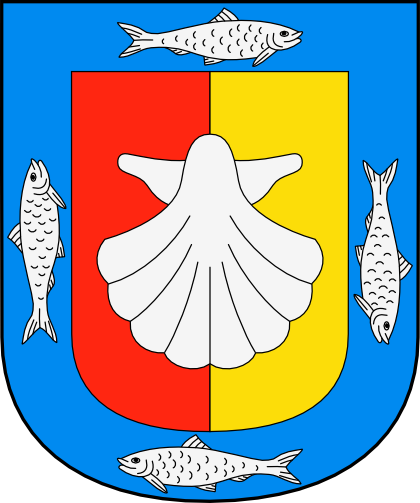

En una remota antigüedad calculada en catorce mil años llegaron a la península por la ruta de las costas del océano Pacífico los primeros grupos humanos nómadas, de economía de subsistencia. Existían tres grupos tribales perfectamente definidos en la época prehispánica: los pericúes, guaycuras y cochimíes. Los pericúes habitaban la parte sur de la península y se extendían hacia el norte, desde Cabo San Lucas hasta la parte media de la península, los Guaycuras habitaban la parte media y los Cochimíes en el extremo norte. Paralelamente a los cochimíes se anota la existencia de otros grupos nómadas tales como: kumiai (k'miai), una de las familias indígenas que junto con los cucapá, pai pai, kiliwa, cahilla y akula poblaron el norte de la península de Baja California, todos pertenecientes al tronco yumano. Baja California Sur (o Sudcalifornia) estuvo habitada antiguamente por tres grupos principales: al sur los pericúes, al centro los guaycuras y al norte los cochimíes. Algunos miembros de este último grupo viven aún en poblaciones del vecino estado de Baja California. Se cree que las primeras inmigraciones provenientes del norte ocurrieron hace más de diez mil años. Los primeros "californianos" vivían de la caza, la pesca y la recolección en un medio natural difícil. Los aborígenes encontrados por los primeros expedicionarios europeos desconocían tanto su origen como a los autores de las pinturas rupestres y petrograbados, de los cuales esta entidad federativa cuenta con el mayor número de sitios en la República, localizados en toda la extensión del territorio estatal. Es poco también lo que se sabe de sus lenguas, de las que se conservan solo algunas palabras y frases. El estado cuenta con importantes centros educativos de nivel medio superior y nivel superior, La Universidad Autónoma de Baja California Sur es la institución educativa más importante del estado. También existen centros de investigación de otras universidades del país y del extranjero. Así como también, cuenta con instituciones formadoras de docentes como la Benemérita Escuela Normal Urbana (BENU), la Escuela Normal Superior y el Centro Regional de Educación Normal "Marcelo Rubio Ruiz". El estado de Baja California Sur tiene uno de los destinos turísticos más importantes del país, las playas y el eco-turismo son las principales fuentes de ingresos para la zona, pero también se desarrollan importantes plantaciones e invernaderos que producen tomate, mangos, berenjena, calabaza, maíz, chile, pimiento morrón y melón. La pesca es otra de las principales actividades económicas del estado, siendo uno de los principales proveedores de los Estados Unidos, Japón y Canadá. La extracción de sal y la minería son actividades económicas que siempre se han desarrollado desde tiempos coloniales a la actualidad.
